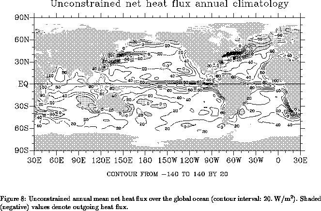

One of the applications of surface marine fluxes is the study of the heat and fresh water balances of the world oceans. Similar calculations based on surface marine data have been performed by many authors (Budyko 1956, Baumgartner and Reichel 1975, Esbensen and Kushnir 1981, Hastenrath 1982, Hsiung 1985, Oberhuber 1988, Isemer et al. 1989, among others). As an example, consider the vertically integrated heat budget equation for the oceans
where
Integrating (39) for a sufficiently long period of
time, the storage term can be neglected,
resulting in the balance equation
which relates the surface net heat flux to the divergence of the mean vertically integrated oceanic transport. If this equation is integrated over the globe, the left hand side (LHS) vanishes, as the heat exchange with the continents is negligibly small. This imposes a consistency condition on the net heat fluxes:
As can be seen from (42), is computed as a
residual from large, uncertain terms and the condition
(44) is not
guaranteed to be met. Figure 8 shows the mean
annual net heat flux over the
global ocean (in W/m
). Clearly, the amount of outgoing (negative)
heat flux is not sufficient to balance the amount of incoming
(positive) heat flux. The imbalance is about 10.5 PW
(10.5
W) which averages to 30.2 W/m
over the entire
ocean. Likewise, there are imbalances between our
estimates of evaporation and precipitation that cannot be accounted
for by the Baumgartner and Reichel (1975) estimates of river runoff
(not shown). If our heat
fluxes were used ``as is'' to force global oceanic models, an
unrealistically large warming trend would result in global mean heat content.
The goal of this section is to describe an additional set of
corrections aimed at producing physically consistent (in the sense of
approximately satisfying eq. (44) or independent
oceanic measurements) surface heat and fresh water fluxes over the
global oceans.

There are two main sources of errors in estimates of surface marine
fluxes from historical data. First, there are observational errors
associated with instrument bias (section 4) and sampling
problems associated with the uneven, and in some areas inadequate,
data coverage of the world oceans (section 10). Second,
even in the presence of perfect surface marine data, one needs to rely
on bulk parameterizations - simplified representations of complex
air-sea interaction processes. A typical example is the short wave
radiation which depends on the optical properties of the
three-dimensional atmosphere. Its parameterization, however, is in
terms of monthly mean fractional cloud cover with constant
coefficients for transmission and water vapor absorption
(section 7.5). In addition to these simplified
expressions, the tuning of bulk parameterizations is usually performed
in specific geographic locations. Tuning derived in one location may
not be representative of other parts of the oceans (e.g., Large and
Pond (1981, 1982) where transfer coefficients have been experimentally
derived on a deep water tower in the North Atlantic and OWS Papa in
the North Pacific). The individual
components that make up the net heat flux depicted in
Fig. 8 are affected by all of these uncertainties. Since
is a small residual from heat gain (incoming solar
radiation) and heat loss (primarily due to evaporation) terms, its
relative error is much larger than the relative error for each of the
individual components.
In section 4 we have documented our attempts to reduce some of the observational biases in COADS. Here, we perform a simple linear inverse calculation to derive small corrections for some of the bulk formula parameters, thereby producing a more physically consistent net heat flux. The technique is standard in geophysics and the development here is similar to Isemer et al. (1989). A more detailed exposition can be found in Menke (1984).